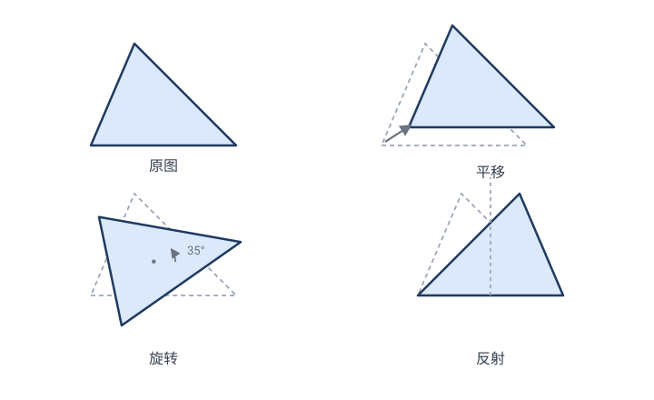

引子：从"静态图形"到"运动的眼光"
1.1一道小学就会的题，藏着几何的灵魂
先做个小实验。下面三个三角形，哪个和"原图形"是"同一个"三角形？

任何一个小学生都会答：它们都是"同一个"三角形，只是搬到了不同位置、转了个方向、或翻了个面。它们的边长一样、角度一样、面积一样。
💡 这句话听起来理所当然，但它已经包含了变换几何的全部精髓。请你盯住下面这个洞察：
"同一个图形"的意思，不是"长得一模一样的两个东西"，而是"能通过某种运动，从一个变成另一个"。
判断两个图形是否"相同"，我们不去逐条比较它们的边和角——而是直接问：它们之间有没有一个"运动"（变换）把它们连起来？ 如果有，它们就是"同一个"几何对象。
这看似只是换了个说法，实际上是一次视角的根本转换：从"图形本身"转到"图形之间的运动"。
1.2欧几里得做了什么，又没做什么
欧几里得（约公元前 300 年）的《几何原本》确立了往后两千年的几何范式。他做了一件极其漂亮的事：把所有几何定理，从少数几条"不证自明"的公理（公设）出发，一步步演绎出来。
但欧几里得的几何有一个鲜明的特征：它是静态的。
- 每个定理都是"给定一个图形 △ABC，证明 …… "。
- 图形安安静静地"躺在"那里，从不移动。
- 所谓"全等"（congruent），欧几里得的定义（《原本》第一卷公理 4 / 叠合原理）是"能够重合"——但"重合"需要你在脑子里把一个图形搬过去叠到另一个上。这个"搬运"的动作，其实就是一个变换，只是欧几里得从没把它当作研究对象。
🤔 想一想：欧几里得说"能重合就全等"，可"重合"究竟是什么？把 △ABC "搬"到 △DEF 上，搬的过程——平移、旋转、必要时翻转——本身就是一个数学对象。把这个"搬的过程"正式拿出来研究，就是变换几何。
欧几里得没走出这一步。变换作为一等公民进入几何，要再等大约两千年。
1.3三个铺垫者：解析几何、射影先驱、运动分析
"变换"的思想不是一夜之间冒出来的。在克莱因 1872 年的宣言之前，至少有三股力量把它推到了台前。
铺垫一：笛卡尔的解析几何（1637）
勒内·笛卡尔（René Descartes, 1596–1650） 在《几何学》（La Géométrie, 1637）里引入坐标系，把几何图形翻译成方程，把几何问题翻译成代数问题。
表面上看，这是"几何代数化"。但更深层地看，坐标化第一次让变换有了可计算的形式：
- 平移：$(x,y) \mapsto (x+a,\, y+b)$
- 旋转：$(x,y) \mapsto (x\cos\theta - y\sin\theta,\, x\sin\theta + y\cos\theta)$
- 反射：$(x,y) \mapsto (-x,\, y)$（关于 $y$ 轴）
每个变换都写成一个公式。变换的复合就是公式的复合。这一下子把"运动"从脑中的想象，变成了纸上的代数运算——这是后续一切的基础。
铺垫二：画家和建筑师的"透视"→ 射影几何（17 世纪）
文艺复兴的画家（如阿尔贝蒂、丢勒）要画逼真的三维场景，发明了透视法：从一个视点（眼睛）出发，把物体投影到画布上。
17 世纪，吉拉德·德沙格（Girard Desargues, 1591–1661） 和年轻的布莱兹·帕斯卡（Blaise Pascal, 1623–1662） 把"投影"这件事抽象成纯数学：把一个图形从一个点投影到一条线或一个面上，会变成另一个图形。这种"中心投影"会把
- 圆 → 椭圆（甚至抛物线、双曲线），
- 平行线 → 相交线，
- 等长的线段 → 不等长的线段。
💡 注意：投影破坏了长度、角度、平行性这些我们习以为常的性质。但它保留了某些更"隐蔽"的东西——比如"三点共线"。德沙格问：在投影下，到底什么不变？ 这个问题孕育了一门全新的几何——射影几何，也孕育了"找不变量"这个核心思想。
铺垫三：欧拉与"运动分析"（18 世纪）
莱昂哈德·欧拉（Leonhard Euler, 1707–1783） 在《无穷分析引论》（Introductio, 1748）里，系统地研究了平面上的各类变换——平移、旋转、反射、相似、仿射——并把它们当作对象来分析。他实际上已经离"变换几何"很近了，但还没有迈出"用变换群来定义几何"那一步。
至此，三股力量汇合：坐标让变换可算，透视让变换丰富，欧拉让变换系统化。舞台已经搭好。
1.41872 年：一个 23 岁年轻人的宣言
1872 年，德国埃尔朗根大学（Erlangen）聘任 23 岁的费利克斯·克莱因为教授。按当时惯例，新教授要做一场"就职演讲"（就职纲领）。
克莱因没有讲某个具体定理，而是讲了一个纲领——一个统一整个几何学的纲领。后来以大学名命之，史称"爱尔兰根纲领"（Das Erlanger Programm）。它的核心，用一句话说就是：
几何学，就是研究某个"变换群"在某个集合上的不变量。
- 想研究"刚体运动"（只许平移、旋转、翻转）下不变的量？那是欧氏几何。
- 想研究"相似变换"（允许放缩）下不变的量？那是相似几何。
- 想研究"仿射变换"（允许剪切、拉伸）下不变的量？那是仿射几何。
- 想研究"中心投影"下不变的量？那是射影几何。
- 想研究"连续变形"（像揉橡皮泥）下不变的量？那是拓扑。
变换的"自由度"越大，能保留的性质越少，但适用的范围越广。于是，所有的几何，按其变换群的"大小"排成了一个层级——
越往右，允许的变换越"狂野"，不变量越少，但结论越普适。
这就是现代数学眼中的"几何全图"。后面几章，我们就一层一层地把它走一遍。
1.5一个贯穿全书的隐喻
请把"变换"想象成给图形施加的一种操作，而把"不变量"想象成操作后幸存下来的性质：
| 你施加的操作越来越"暴力" | 幸存的性质（不变量）越来越少 |
|---|---|
| 只许搬运（刚体） | 距离、角度、面积全保留 |
| 允许放大缩小（相似） | 角度、比例保留，绝对长度没了 |
| 允许斜切拉伸（仿射） | 平行、共线比例保留，角和圆没了 |
| 允许任意投影（射影） | 只剩共线性、交比 |
| 允许任意揉捏（拓扑） | 只剩连通性、"洞"的个数 |
每一行，就是一门几何。读这本书的过程，就是顺着这张表，从上到下，一层层"剥夺"图形的性质，看每一步"剥夺"之后，还剩下什么。
1.6本课件要回答的问题
带着这些问题，我们出发：
- 刚体变换（第 2 章）有哪些？为什么任何刚体运动都能拆成"反射"的复合？距离为什么不变？
- 相似变换（第 3 章）：放大缩小如何保住"形状"？什么是位似、自相似？
- 仿射变换（第 4 章）：为什么椭圆和圆"本质相同"？剪切变换到底改变了什么？
- 射影变换（第 5 章）：投影到底保留了什么？什么是"交比"？为什么它不变？
- 反演（第 6 章）：关于一个圆的"反演"为什么能把直线变圆、圆变直线？
- 爱尔兰根纲领（第 7 章）：克莱因凭什么一句话统一全部几何？怎么把几何排成层级？
- 对称与群（第 8 章）：什么是"对称"？它和变换、和群、和"解方程"（伽罗瓦）有什么关系？
- 影响（第 9 章）：这套思想如何塑造了现代数学和物理学？
✏️ 本章小贴士：如果你只记住一件事，请记住——"同一个图形"=被某个变换连起来的两个图形；"几何性质"=在某个变换群下不变的量。这两句话是全书的钥匙。
📐 关于证明（全书约定）：本课件不满足于"陈述结论"。每一条重要定理——反射生成定理、仿射保平行、交比是射影不变量、反演把直线变圆、伯恩赛德引理——我们都会给出能跟进、可手算验证的证明。看不懂证明的结论，只是别人的话；看懂了，才是你自己的几何。如果某处证明你觉得跳步了，那是我的疏漏，请记下来。
下一章：第 02 章 · 刚体变换
🧩 本章习题
动手题 1.1 哪些变换能"对上"？
在平面上画一个不等边三角形 △ABC。下列哪些操作，做出来的三角形与原图"全等"（边长、角都不变）？ (a) 整体向右平移 3；(b) 绕某点旋转 30°；(c) 关于某直线翻折；(d) 把每条边都放大到 2 倍；(e) 把横坐标拉伸到 2 倍、纵坐标不变；(f) 关于原点的中心投影到另一条直线上。
查看解答 / 提示
答：(a)(b)(c) 全等；(d) 相似不全等；(e) 仿射，既不全等也不相似；(f) 射影，连角都不保。这道题就是全书目录的缩影。
思考题 1.2 "全等"和"相似"在变换眼里差在哪？
用变换的语言重新表述"全等三角形"和"相似三角形"的定义。
查看解答 / 提示
提示：全等 = 存在一个保距变换把一个映到另一个；相似 = 存在一个相似变换（保距 × 放缩）把它们映来映去。
开放题 1.3 找不变量
把一个正方形任意旋转一个角度（不一定是 90° 的倍数）。下列哪些量保持不变：边长？对角线长？面积？四个角是直角？四边相等？对边平行？内角和 360°？
查看解答 / 提示
答：旋转是刚体变换，所以所有几何量都不变。这道题的用意是：先感受"刚体变换保留一切"是什么手感，下章我们再逐步"放松约束"。